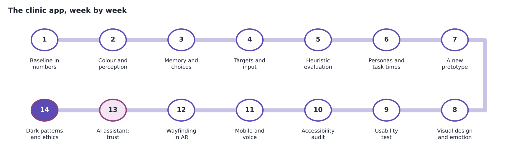
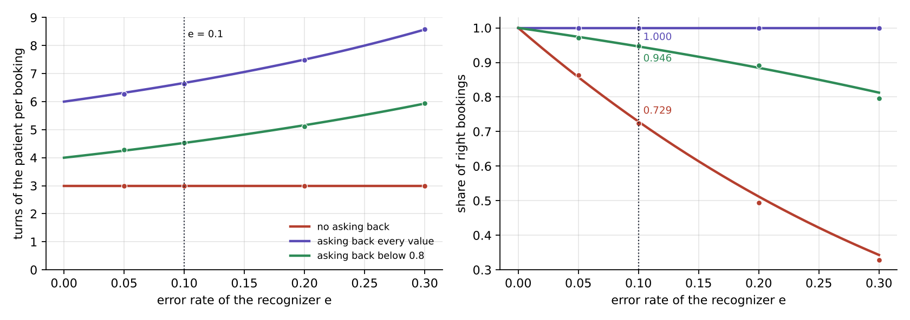
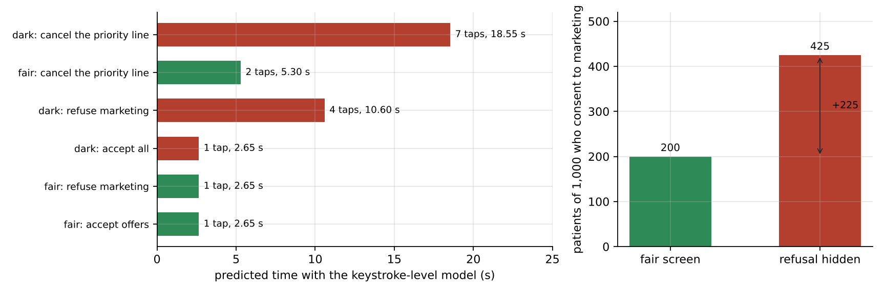
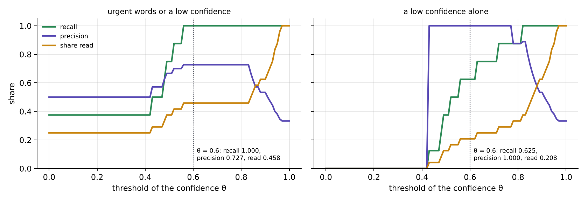
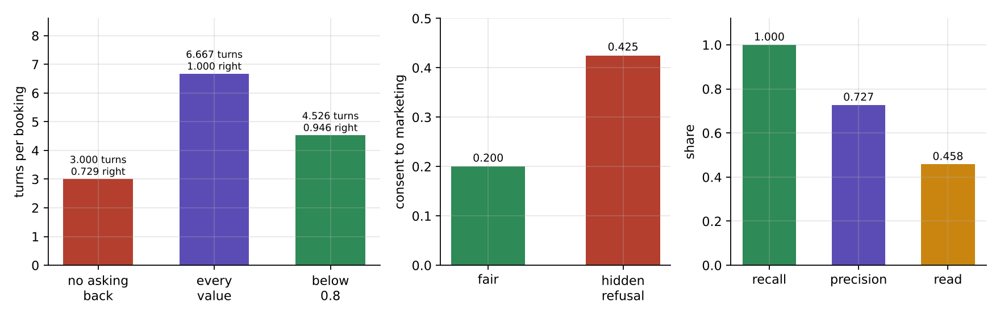

Overview
Week 13 gave the clinic app an assistant that suggests a department. This week, the assistant talks. A booking assistant of artificial intelligence (AI) asks for a department, a day and a time, mishears some answers and must know when to ask back. The week evaluates such conversations and then turns to screens that steer users against their interests. It closes with consent, the handover to a person and the values behind design. The clinic app reaches stage 14, its last stage. The Python step writes organised and tested code, and the week ends with a review of the course.
Week at a glance
flowchart LR A["Conversational interfaces"] --> B["Errors and confirmations"] B --> C["Evaluating conversations"] C --> D["Dark patterns"] D --> E["Privacy and consent"] E --> F["Handing over to a person"] F --> G["Ethics of design"] G --> H["Interface clinic"] H --> I["The human side"] I --> S["The clinic app, stage 14"] S --> R["The course in review"]
Every method on this page is also written as Python code in the Colab notebook of the week. Its code is divided into numbered sections. Each orange box on this page names the section whose code carries out what the text above the box explains. The box says what to run and what to look at in that section, and its button opens the Colab notebook at that place. The games, the practice parts and the self-assessment of the week are in the interactive lab. Each violet box opens one part of the interactive lab. The part ends with a link back to its box on this page, and the Colab notebook is always opened from the orange boxes here.
Python step 14: Organised and tested code
Python code in the Colab notebook, right after Section 0 (setup). Open the Colab notebook and run this step cell by cell: It consists of short pieces of Python code with their explanations, a quick check and three exercises. Topics: Functions that explain themselves · Tests with assert · A table of states and events · Many cases at once: A small test runner.
The step writes functions with docstrings and tests them with assert [1]. It stores the behaviour of a dialogue as a table of states and events, and it checks many cases at once with a small test runner. The sections of the week use these pieces for the dialogue manager, its tests and its evaluation. Students who have never programmed start with the start-here notebook of the course.
Weeks 1 to 12 built the clinic app for screens, phones, voices and the building. Week 13 added an assistant that suggests a department with a calibrated confidence.
This week completes the app. Stage 14 adds a conversational booking assistant and reviews the app for dark patterns.

Conversational interfaces: Turns, intents and slots
A conversation proceeds in turns, and each turn of the user carries an intent, such as booking or cancelling. A task like a booking has slots to fill, here the department, the day and the time. In system initiative, the assistant asks for one slot at a time. In mixed initiative, the user may fill several slots at once or change the topic.
Clark and Brennan described conversation as a joint activity in which the partners keep track of their common ground [2]. They call grounding the collective process by which the partners try to reach the mutual belief that they have understood each other well enough for current purposes. Asking back is grounding: "Did you say Tuesday?" Week 11 read back a single voice command; a conversation chains many such turns.
A dialogue manager decides what the assistant says next. A simple one is a finite-state machine: A table that maps a state and an event to the next state. The booking assistant starts, asks for the department, the day and the time, confirms and books. From any state, a request for a person hands the conversation over.
Scene: A conversation as a state machine. A patient books at the kiosk of the entrance hall, and a board beside it draws the dialogue manager. Step through four moments with the buttons and watch the state on the board, the chat on the kiosk and the nurse. The readout names the step, the state, the slots filled and what the assistant does.
In the scene, the board follows the patient through the machine. The dashed arrows are mixed initiative, which skips states, and the handover, which leaves the machine from any state.
Part A of the interactive lab puts you at the kiosk of the entrance hall with four booking cards per round. You say each value by a button, and the recognizer mishears some of them. Round 1 never asks back, and round 2 asks back when the recognizer is less than 80 percent sure.
Interactive lab, Part A. The booking assistant in 3D: Eight bookings at the kiosk, without and with asking back. The results can be copied into the Colab notebook.
Python code in the Colab notebook, Section 1. Open Section 1 of the Colab notebook and run it. The dictionary FSM and the function step form the dialogue manager, and test_fsm tests it. The function converse simulates 20,000 bookings for each strategy. Paste your results of Part A into MY_CHAT: The code counts your turns and right bookings.
Check your understanding. A patient says "Dermatology on Thursday at 10:30" in one turn. What does the assistant support?
- When would you rather book by a conversation than by a form, and when not?
- Should the assistant say at the start that it is a computer program? Why?
Errors and confirmations
A recognizer mishears a value with the probability \(e\). Without asking back, a booking of \(k\) slots is right only when every value is right. Asking back every value catches every error, but each attempt then takes two turns:
\(P_{\text{none}}\) is the share of right bookings without asking back, which takes \(k\) turns. \(T_{\text{every}}\) is the expected number of turns of the patient when the assistant asks back every value, and then every booking is right. The assistant can also ask back only when the recognizer is unsure, as the calibrated confidence of Week 13 allows:
\(r = 1 - e\), and \(a\) and \(b\) are the shares of right and of misheard values whose confidence reaches the threshold \(\theta\). \(T_1\) is the expected number of turns per slot and \(P_1\) the share of slots that end right. A booking takes \(k\,T_1\) turns and is right with the probability \(P_1^k\). The model of this week assumes that right values have a confidence between 0.7 and 1.0, and misheard values one between 0.3 and 0.9.
→ These formulas with numbers, step by step: Lab Part B, first calculator, steps 1 to 4, and second calculator, steps 1 to 4.
A worked example. With \(k = 3\) and \(e = 0.1\), a booking without asking back takes 3 turns and is right with \(0.9^3 = 0.729\). Asking back every value takes \(6/0.9 = 6.667\) turns. With \(\theta = 0.8\), \(a = 0.2/0.3 = 0.667\) and \(b = 0.1/0.6 = 0.167\). Then \(T_1 = 1.383/0.917 = 1.508\) and \(P_1 = 0.9/0.917 = 0.981\). A booking takes \(3 \times 1.508 = 4.524\) turns and is right with \(0.981^3 = 0.944\). Section 2 of the Colab notebook, which does not round, gives 4.526 and 0.946.
Interactive lab, Part B. Asking back step by step: Two calculators with presets, the turns and the right bookings without and with asking back every value, and with asking back below a threshold.
Animation. Simulated patients book three slots with each of three strategies. The assistant never asks back, asks back every value or asks back below the threshold. The bars fill as the conversations end, and the dashed marks show the values of the formulas. Move the error rate and the threshold, or run the conversations again.
Python code in the Colab notebook, Section 2. Open Section 2 of the Colab notebook and run it. The functions none_, explicit_ and confidence_ carry out the formulas of this section. A figure draws the three strategies against the error rate, with simulations as dots; try other rates and thresholds with the sliders.
Check your understanding. Without asking back, \(k = 3\) and \(e = 0.1\). What share of the bookings is right?
- Which error of a booking is worse, a wrong day, a wrong time or a wrong department?
- Would you rather answer "yes" four times or find a wrong booking once a week?
Evaluating conversations
Walker, Litman, Kamm and Abella proposed PARADISE (PARAdigm for DIalogue System Evaluation), a framework for evaluating spoken dialogue agents [3]. It separates what a task requires from how an agent conducts the dialogue. User satisfaction (US) is explained by task success and by the costs of the dialogue, such as the number of turns and repairs. A linear regression on normalised measures finds the weight of each factor:
\(\mathrm{US}\) is the rated satisfaction, \(c_i\) are the costs and \(\mathcal{N}(x) = (x - \bar x)/s_x\) normalises a measure to a mean of 0 and a standard deviation of 1. Walker and colleagues measured task success with the kappa statistic; this week uses the share of right bookings.
Section 3 of the Colab notebook simulates 90 rated bookings, 30 for each strategy. The fit gives \(\mathrm{US} \)\({}= 3.509 \)\({}+ 0.795\,\mathcal{N}(\text{success}) \)\({}- 0.460\,\mathcal{N}(\text{turns})\). Asking back below the threshold then has the highest predicted satisfaction, 3.710, against 3.423 without asking back and 3.394 when asking back every value. The ratings are simulated, so the numbers illustrate the method rather than real patients.

Python code in the Colab notebook, Section 3. Open Section 3 of the Colab notebook and run it. The function z normalises a measure, and np.linalg.lstsq fits the weights of PARADISE to 90 simulated ratings. The code prints the predicted satisfaction of each strategy and draws the ratings against the turns.
Check your understanding. In PARADISE, what explains user satisfaction?
- Which cost of a conversation would you add to turns and repairs?
- What would a clinic miss if it asked only patients who finished their booking?
Dark patterns
Gray and colleagues collected examples of dark patterns, designs that work against the interests of the user [4]. They grouped them into five strategies. Nagging interrupts again and again, and obstruction makes a task harder than necessary. Sneaking hides information, interface interference privileges one choice over another, and forced action requires an action in exchange for a function.
Mathur and colleagues crawled about 53,000 product pages of about 11,000 shopping websites [5]. They found 1,818 instances of dark patterns of 15 types in 7 categories. Of these websites, 183 used deceptive practices, and 22 third parties offered dark patterns as a ready-made service.
Luguri and Strahilevitz measured the effect in an experiment with a representative sample of American consumers [6]. Participants with mild dark patterns were more than twice as likely to sign up for a dubious service as the control group. With aggressive dark patterns, they were almost four times as likely. Aggressive dark patterns caused a backlash among the participants, but mild ones did not.
The time that a dark pattern costs can be predicted with the keystroke-level model of Week 6. A tap with a decision takes a mental preparation, a pointing and a press: \(t_M \)\({}+ t_P \)\({}+ t_B \)\({}= 1.35 \)\({}+ 1.10 \)\({}+ 0.20 \)\({}= 2.65\) s. Cancelling a subscription in seven taps then takes 18.55 s, and in two taps 5.3 s.
Part C of the interactive lab hands you the tablet of the waiting room with two tasks per round. Turn on reminders without consenting to marketing, and cancel a paid service. Round 1 uses the first version of the app, and round 2 the second.
Interactive lab, Part C. Consent and cancellation in 3D: Two tasks on the tablet of the waiting room, in two versions of the app. The results can be copied into the Colab notebook.

Python code in the Colab notebook, Section 4. Open Section 4 of the Colab notebook and run it. The function path_time predicts the time of each path of Part C, and the code estimates the consent of 1,000 patients. Paste your results of Part C into MY_CONSENT: The code compares your taps and times with the model.
Check your understanding. A cancellation is hidden four screens deep. Which strategy of Gray and colleagues is this?
- Where does a helpful default end and a dark pattern begin?
- Who in a clinic decides about the design of a consent screen, and who should?
Privacy and consent
The General Data Protection Regulation (GDPR) of the European Union defines consent as any freely given, specific, informed and unambiguous indication of the wishes of the data subject [7]. It must be given by a statement or by a clear affirmative action. It shall be as easy to withdraw consent as to give it, and personal data shall be limited to what is necessary for the purposes of the processing.
Nouwens and colleagues scraped the designs of the five most popular consent management platforms on the top 10,000 websites in the United Kingdom, 680 of which used them [8]. Only 11.8 percent met minimal requirements based on European law. In a field experiment with 40 participants, removing the opt-out button from the first page increased consent by 22 to 23 percentage points. More granular controls on the first page decreased it by 8 to 20 points.
Suppose that a fair consent screen of the clinic gets consent to marketing from 20 percent of the patients, an illustrative value. Hiding the refusal would then raise it to about 42.5 percent. That is 225 more patients in every 1,000 whose data would be used for offers they did not choose.
- Can consent be freely given by a patient who waits for a doctor?
- Which data does the booking assistant need, and which could it do without?
Handing over to a person
Article 50 of the Artificial Intelligence Act of the European Union concerns AI systems that interact directly with people [9]. Their providers must design them so that the people are informed that they are interacting with an AI system, unless this is obvious. The booking assistant of the clinic says so in its first line. Amershi and colleagues recommend supporting efficient correction and scoping services when in doubt [10]. For a chatbot, both include a fast way to a person.
A simple rule hands a conversation over when an urgent word appears or when the confidence of the chatbot about the intent falls below a threshold. Its recall is the share of the conversations that need a person and are taken over. Its precision is the share of the taken over that need a person. Both count the true positives (TP), the false negatives (FN) and the false positives (FP) of the rule:
\(TP\) counts the conversations taken over that need a person, \(FN\) those missed and \(FP\) those taken over without need. On the 24 conversations of Part D, eight need a person. The urgent words alone find 3 of them, a recall of 0.375. With a confidence below 0.6 as a second reason, the rule finds all 8 and takes over 3 without need. Its precision is \(8/11 = 0.727\), and the supervisor reads 0.458 of the conversations.
→ These formulas with numbers, step by step: Lab Part D, calculator, steps 1 to 3.
Part D of the interactive lab makes you the supervisor of the clinic's chatbot at night. Twelve conversations come in each round, and you let the chatbot continue or take over. Round 2 adds the confidence of the chatbot and a flag for urgent words.
Interactive lab, Part D. The night supervisor in 3D: Twenty-four conversations of the chatbot, without and with its confidence and a flag. The results can be copied into the Colab notebook.

Python code in the Colab notebook, Section 5. Open Section 5 of the Colab notebook and run it. The function evaluate applies the rule to the 24 conversations for several thresholds. Paste your results of Part D into MY_NIGHT: The code counts the conversations that you missed and those that you took over without need.
Check your understanding. A rule takes over 11 conversations, 8 of which need a person, and misses none. What is its precision?
- Which conversations of a clinic should never stay with a chatbot?
- How should a chatbot say that a person is coming, and how long may the patient wait?
Ethics of design
Friedman and Hendry describe value sensitive design, an approach that accounts for human values throughout the design of technology [11]. It combines conceptual investigations of the values and the stakeholders, empirical investigations of people and technical investigations of the system. The patients, the nurses and the families of the clinic are all stakeholders, also when they never use the app.
The Code of Ethics of the Association for Computing Machinery (ACM) sets out principles for computing professionals [12]. Among them, they should avoid harm, be honest and trustworthy, be fair and respect privacy. Jobin, Ienca and Vayena analysed 84 documents with ethical principles or guidelines for AI [13]. They found a global convergence around five principles: Transparency, justice and fairness, non-maleficence, responsibility and privacy. How these principles are interpreted and implemented, however, differs widely.
- Which value of the clinic app would you defend first if the budget were cut?
- Who is a stakeholder of the booking assistant without ever using it?
Interface clinic
The interface clinic of this week examines four screens of the clinic app. Each pair shows a screen before and after a change, with the number or the finding that the change answers.
Interface clinic: Consent to reminders and offers. The first screen after the installation of the clinic app.
BeforeAccept all, and a hidden refusal
Refusing takes four taps behind a grey link, accepting one. Removing the refusal from the first page raised consent by 22 to 23 points in the field experiment of Nouwens and colleagues [8].
AfterEqual choices, nothing ticked in advance
Both choices take one tap and look the same. Consent is given by a clear affirmative action and is as easy to withdraw as to give, as the GDPR requires [7].
Interface clinic: Cancelling the priority line. The paid priority line of the clinic app, which a patient wants to cancel.
BeforeFour screens deep, with a question that shames
Obstruction and a question that shames the user [4]. The path takes 7 taps, 18.55 s by the keystroke-level model, before any reading.
AfterOne link on the home screen, one confirmation
Two taps, 5.3 s, with equal buttons. Cancelling is as easy as signing up.
Interface clinic: A misheard value. The patient said 16:00, and the recognizer heard 06:00 with a confidence of 0.58.
BeforeBooked without asking
Without asking back, a booking of three slots is right only 0.729 of the time at an error rate of 0.1.
AfterAsking back below 80 percent
Asking back only when unsure keeps 0.946 of the bookings right with 4.526 turns, instead of 6.667 turns for asking back every value.
Interface clinic: Who is answering? The chat of the clinic app, where a patient asks for a person.
BeforeA friendly name, and no way out
The name suggests a person, and the request for one is ignored. People are to be informed that they interact with an AI system [9].
AfterAn honest assistant that hands over
The header says what the assistant is, and a request for a person ends the machine's turn at once, as the handover state of the dialogue manager does.
- Which of the four changes would cost the clinic money, and should it make them anyway?
- Which screen of an app that you use would you take to this clinic?
The human side: Expectations and vulnerability
Luger and Sellen interviewed 14 users of conversational agents [14]. User expectations were dramatically out of step with how the systems worked, above all in terms of machine intelligence, system capability and goals. The users relied on the agents mainly for hands-free use and for tasks that needed little precision. They connected the gulf to the gulfs of execution and evaluation of Norman.
Dark patterns do not affect everyone equally. In the experiment of Luguri and Strahilevitz, less educated participants were significantly more susceptible to mild dark patterns than their well-educated counterparts [6]. A clinic serves people of every education, age and state of health, in the spirit of Week 10.
A retired teacher signed up for the priority line of her clinic in one tap. When she tried to cancel, she found no button on the home screen. Three menus deep, a large green button offered to keep the service, and a question asked whether she did not mind waiting for care. She paid for two more months.
- Which patients would struggle most with the booking assistant, and what would help them?
- Should a clinic be held to a higher standard of design than a shop? Why?
The clinic app, stage 14: A conversational booking assistant and a review of dark patterns
Stage 14 completes the clinic app in three parts. The booking assistant says that it is a computer program and asks back when it is less than 80 percent sure. Consent and cancellation follow fair designs, and a rule hands conversations over to a person.
With an error rate of 0.1, asking back below the threshold takes 4.526 turns per booking, and 0.946 of the bookings are right. Without asking back, 0.729 are right with 3 turns, and asking back every value takes 6.667 turns. Fair screens keep the consent to marketing at the 20 percent that patients choose, instead of 42.5 percent with a hidden refusal. Cancelling takes 5.3 s instead of 18.55 s. The handover rule finds every conversation of Part D that needs a person, with a precision of 0.727.
| Measure | Before | Stage 14 |
|---|---|---|
| Right bookings by voice, \(e = 0.1\) | 0.729 without asking back | 0.946, asking back below 0.8 |
| Turns of the patient per booking | 3 without asking back, 6.667 asking back every value | 4.526 |
| Consent to marketing | 0.425 with a hidden refusal (illustrative) | 0.20 with equal choices |
| Predicted time to cancel the priority line | 18.55 s in 7 taps | 5.3 s in 2 taps |
| Conversations that need a person and are taken over | 3 of 8 with urgent words alone | 8 of 8 with words and a confidence below 0.6 |

| Question of stage 14 | Answer | Where |
|---|---|---|
| When should the assistant ask back? | Below a confidence of 0.8: 4.526 turns and 0.946 right bookings | Sections 1 and 2, Parts A and B |
| Which strategy do patients prefer? | Asking back below the threshold, in the simulated ratings | Section 3 |
| How much do dark patterns cost the patients? | 13.25 s more to cancel, and 225 more consents in 1,000 | Section 4, Parts C and E |
| When does a person take over? | At urgent words or a confidence below 0.6 | Section 5, Part D |
Stage 14 rests on simulated conversations, illustrative ratings and an effect measured on websites. A study with patients, as in Week 9, would check them. With this stage, the clinic app has met every topic of the course.
Check your understanding. Asking back below the threshold gives 4.526 turns and 0.946 right bookings. Asking back every value gives 6.667 turns and 1.0. What does the second strategy cost per booking?
Interactive lab, Part E. Stage 14 by hand: The predicted times of the dark and the fair paths of Part C.
Python code in the Colab notebook, Section 6. Open Section 6 of the Colab notebook and run it. The code collects the results of stage 14 in the dictionary STAGE14. It holds the three strategies of asking back, consent and cancellation and the handover rule. A figure draws the results.
Your application
The questions of this week apply to every conversational service. How many slots does a task have, how often does its recognizer err, and which conversations need a person? The Colab notebook holds an application switch with four further applications: An order of pizza, the hotline of a bank, the rebooking of a flight and a smart home.
Python code in the Colab notebook, Section 7. Open Section 7 of the Colab notebook, set APP to one of the five names in the comment and run the cell. The code computes the turns and the right tasks of the three strategies for the application.
The course in review
Fourteen weeks have taken the clinic app from a booking screen to a conversational assistant. The human came first: Perception, attention, memory and movement set the limits of every screen. Principles, user-centred design, prototypes, visual design and evaluation turned these limits into methods. Accessibility, mobile and multimodal interaction and three dimensions widened the range of people and places. The last two weeks added assistants of AI, with their confidence, explanations and conversations.
The final project applies these methods to an interface with an AI feature of your choice. It asks for a prototype, an evaluation and a report, as described in the final project. Every week of the course stays available as a reference for it.
An AI feature changes what users can do and also what they must trust, check and understand. The questions of this course remain. Who are the users, and what are their tasks? How do they perceive and decide, and how would you know that the design works for them? The final project asks them of an interface of your own.
- Which method of the course would you use first on a new interface, and why?
- Which stage of the clinic app changed your view of design the most?
Review cards
Select a card to turn it over.
References
[1] Van Rossum, G., & Drake, F. L. (2009). Python 3 Reference Manual. CreateSpace.
[2] Clark, H. H., & Brennan, S. E. (1991). Grounding in communication. In L. B. Resnick, J. M. Levine, & S. D. Teasley (Eds.), Perspectives on socially shared cognition (pp. 127-149). American Psychological Association. https://doi.org/10.1037/10096-006
[3] Walker, M. A., Litman, D. J., Kamm, C. A., & Abella, A. (1997). PARADISE: A framework for evaluating spoken dialogue agents. In Proceedings of the 35th Annual Meeting of the Association for Computational Linguistics and 8th Conference of the European Chapter of the Association for Computational Linguistics (pp. 271-280). Association for Computational Linguistics. https://doi.org/10.3115/976909.979652
[4] Gray, C. M., Kou, Y., Battles, B., Hoggatt, J., & Toombs, A. L. (2018). The dark (patterns) side of UX design. In Proceedings of the 2018 CHI Conference on Human Factors in Computing Systems (pp. 1-14). ACM. https://doi.org/10.1145/3173574.3174108
[5] Mathur, A., Acar, G., Friedman, M. J., Lucherini, E., Mayer, J., Chetty, M., & Narayanan, A. (2019). Dark patterns at scale: Findings from a crawl of 11K shopping websites. Proceedings of the ACM on Human-Computer Interaction, 3(CSCW), Article 81, 1-32. https://doi.org/10.1145/3359183
[6] Luguri, J., & Strahilevitz, L. J. (2021). Shining a light on dark patterns. Journal of Legal Analysis, 13(1), 43-109. https://doi.org/10.1093/jla/laaa006
[7] European Parliament and Council of the European Union. (2016). Regulation (EU) 2016/679 of the European Parliament and of the Council of 27 April 2016 on the protection of natural persons with regard to the processing of personal data and on the free movement of such data, and repealing Directive 95/46/EC (General Data Protection Regulation). Official Journal of the European Union, L 119, 1-88. https://eur-lex.europa.eu/eli/reg/2016/679/oj
[8] Nouwens, M., Liccardi, I., Veale, M., Karger, D., & Kagal, L. (2020). Dark patterns after the GDPR: Scraping consent pop-ups and demonstrating their influence. In Proceedings of the 2020 CHI Conference on Human Factors in Computing Systems (pp. 1-13). ACM. https://doi.org/10.1145/3313831.3376321
[9] European Parliament and Council of the European Union. (2024). Regulation (EU) 2024/1689 of the European Parliament and of the Council of 13 June 2024 laying down harmonised rules on artificial intelligence and amending Regulations (EC) No 300/2008, (EU) No 167/2013, (EU) No 168/2013, (EU) 2018/858, (EU) 2018/1139 and (EU) 2019/2144 and Directives 2014/90/EU, (EU) 2016/797 and (EU) 2020/1828 (Artificial Intelligence Act). Official Journal of the European Union, L, 2024/1689. https://eur-lex.europa.eu/eli/reg/2024/1689/oj
[10] Amershi, S., Weld, D., Vorvoreanu, M., Fourney, A., Nushi, B., Collisson, P., Suh, J., Iqbal, S., Bennett, P. N., Inkpen, K., Teevan, J., Kikin-Gil, R., & Horvitz, E. (2019). Guidelines for human-AI interaction. In Proceedings of the 2019 CHI Conference on Human Factors in Computing Systems (pp. 1-13). ACM. https://doi.org/10.1145/3290605.3300233
[11] Friedman, B., & Hendry, D. G. (2019). Value sensitive design: Shaping technology with moral imagination. The MIT Press. https://doi.org/10.7551/mitpress/7585.001.0001
[12] ACM Code 2018 Task Force. (2018). ACM Code of Ethics and Professional Conduct. Association for Computing Machinery. https://www.acm.org/code-of-ethics
[13] Jobin, A., Ienca, M., & Vayena, E. (2019). The global landscape of AI ethics guidelines. Nature Machine Intelligence, 1(9), 389-399. https://doi.org/10.1038/s42256-019-0088-2
[14] Luger, E., & Sellen, A. (2016). "Like having a really bad PA": The gulf between user expectation and experience of conversational agents. In Proceedings of the 2016 CHI Conference on Human Factors in Computing Systems (pp. 5286-5297). ACM. https://doi.org/10.1145/2858036.2858288